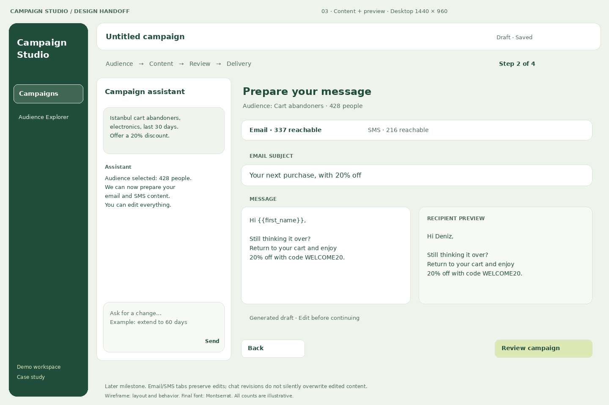

Floating Conservatory / wireframes
Four static screens. First milestone: 01–02. Later context: 03–04.
Read the handoff · Selected visual reference
Illustrative data. PNGs use a fallback font; production font is Montserrat. SVGs remain editable vector assets.
03-content
Editable SVG